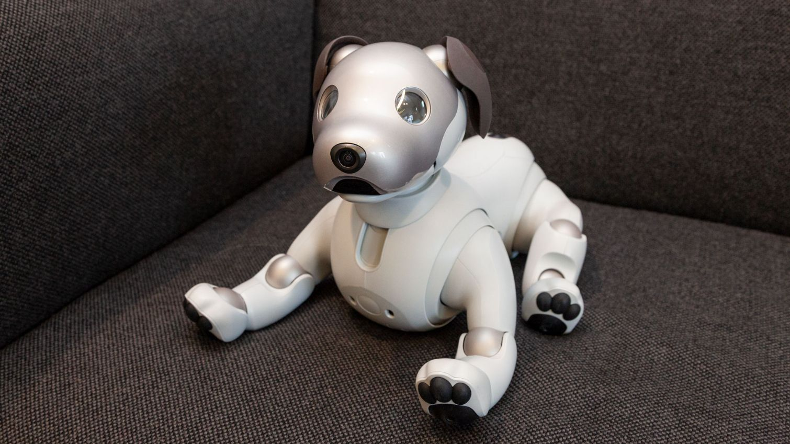
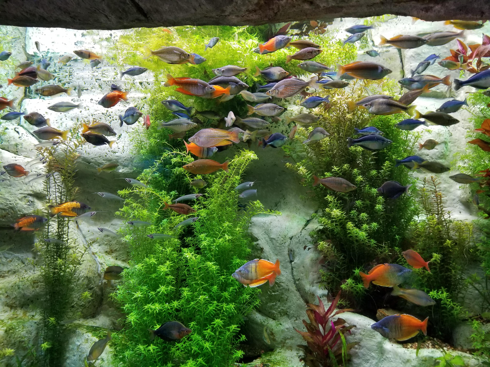
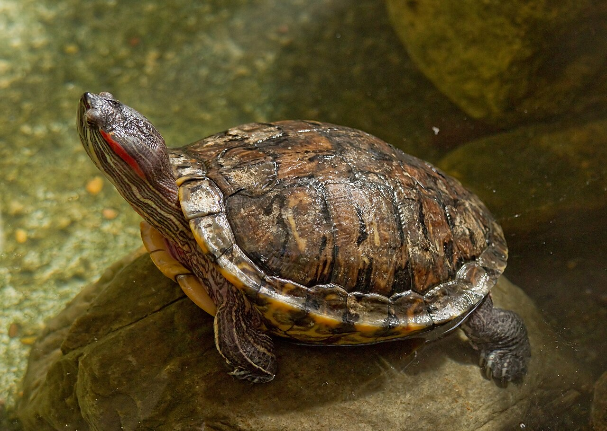
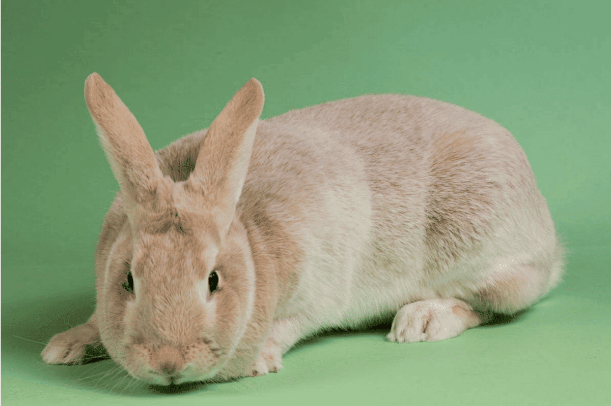
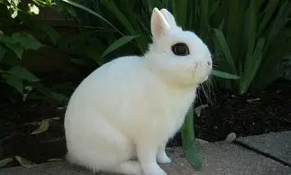

Welcome to the MyPets page! This is
where you can see the latest updates and features!
Hello, my name is Ethan! I am currently 12 years old
and I have a big dream: to help pet care worldwide.
One of my pets is named Bun-Bun.
She is a dwarf hotot which derives
from the more popular Blanc de Hotot,
which is from France. She is currently 5 years old,
and for the summer Bun-Bun and my grandma are going
to stay over at my house.
A few years after Bun-Bun
moved into my grandma's house, she started treating
the bunny unfairly. Everytime she did something wrong,
such as go under the couch or try to lick something
bad, my grandma would yell, grab her, and shove her
into her cage. Although I understand why she would do
this, my grandma at the time needed to understand why
doing this can be bad for Bun-Bun's health.
My cousins also have another bunny named Mochi.
While I don't know her actual place of origin,
her gray fur makes it clear that she is somewhat
of a European mix.
They also had an Aibo robotic dog,
causing her irreversible damage to her left cheek.
At least she looks like she's smirking and can do
normal health functions.
Additionally, I had the following pets before in my life:
For my company I aim to get the following animals:
As I previously said in the first section, my goal for this company
is to help people take care of pets better. Unlike other apps, the
interface and features are supposed to be both adult and child friendly.
Currently, the first app has not been created yet. Come back to see its progress below:
Right this moment, I am working on the first app, MyBunny:
After finishing the Main Interface, I am simultaneously working on both of the feed
and play features. For the first, I am waiting on multiple experts to collect some
data on other bunnies and their food habits. For the second, I am currently working
on the survey, which then I will make the feed home and take advantage from those same experts.